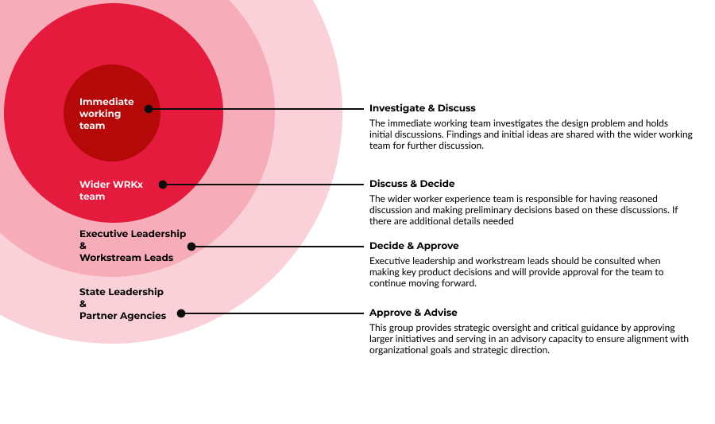

Welcome to the Design Process Wizard
This wizard will guide you through the design process, allowing you to select activities and deliverables for each phase.
Timeline Input
Timeline View
Stakeholder Review Process
Stakeholder review should start with the immediate project team and broaden as the team gets additional clarity on the work to be done. This approach ensures that feedback is gathered efficiently and effectively throughout the design process.
See the Who's Who on FAMLI Key stakeholders may include:
- Immediate project team members
- Design leads and managers
- Product managers
- Marketing managers
- Compliance specialists
- End-users or customer representatives
As the project progresses, involve broader stakeholder groups to ensure comprehensive feedback and buy-in.